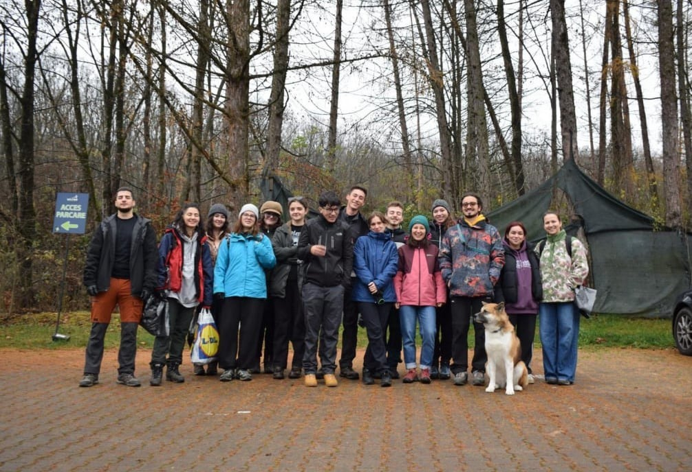
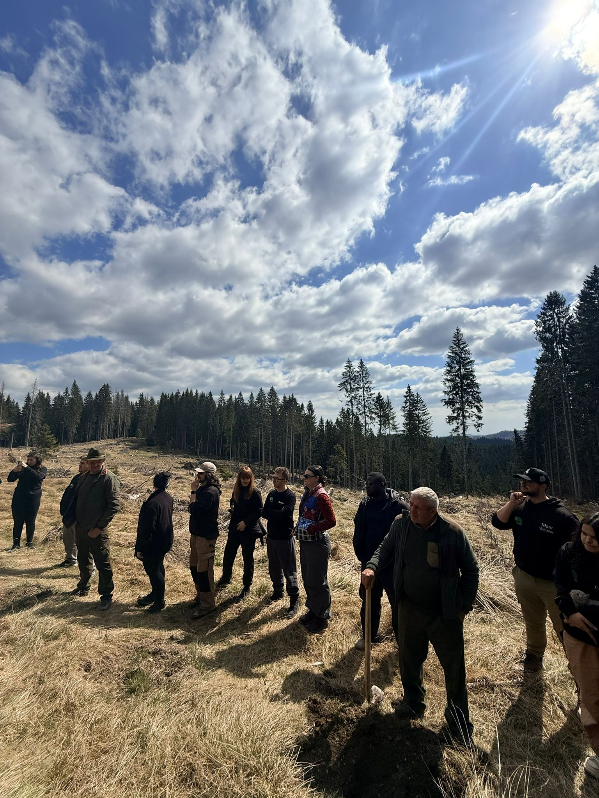
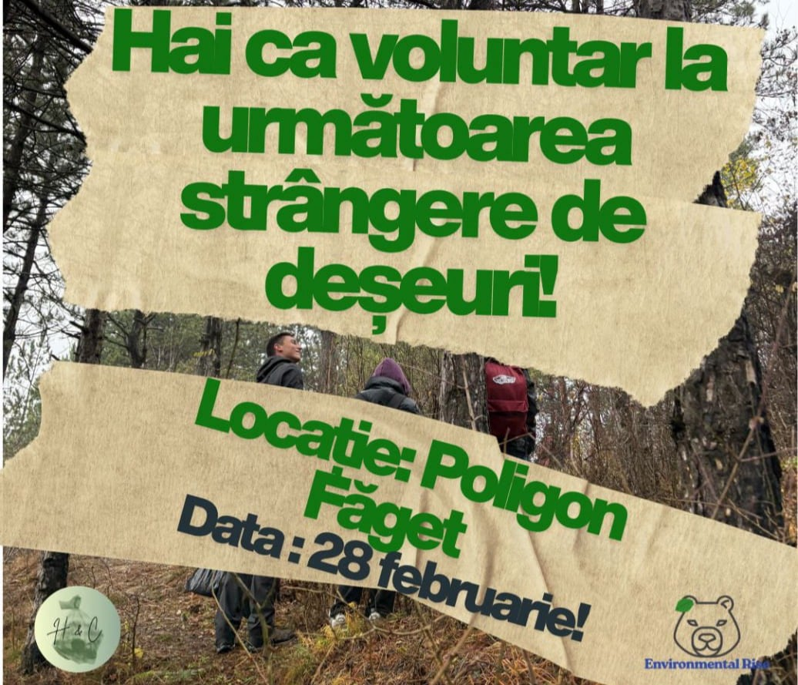
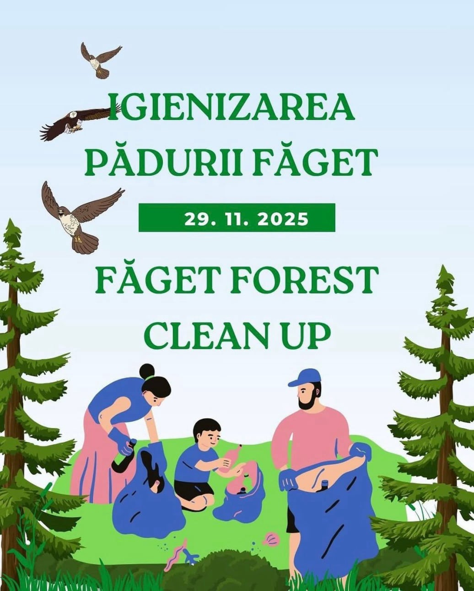
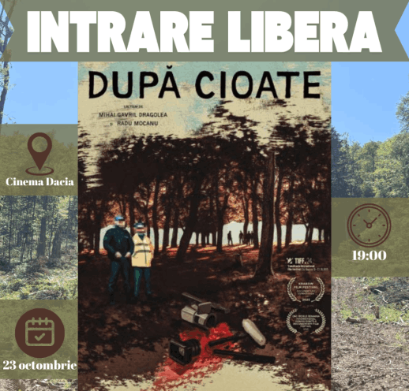
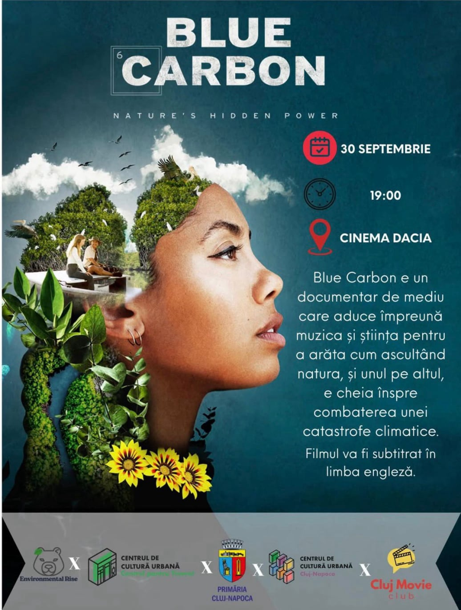
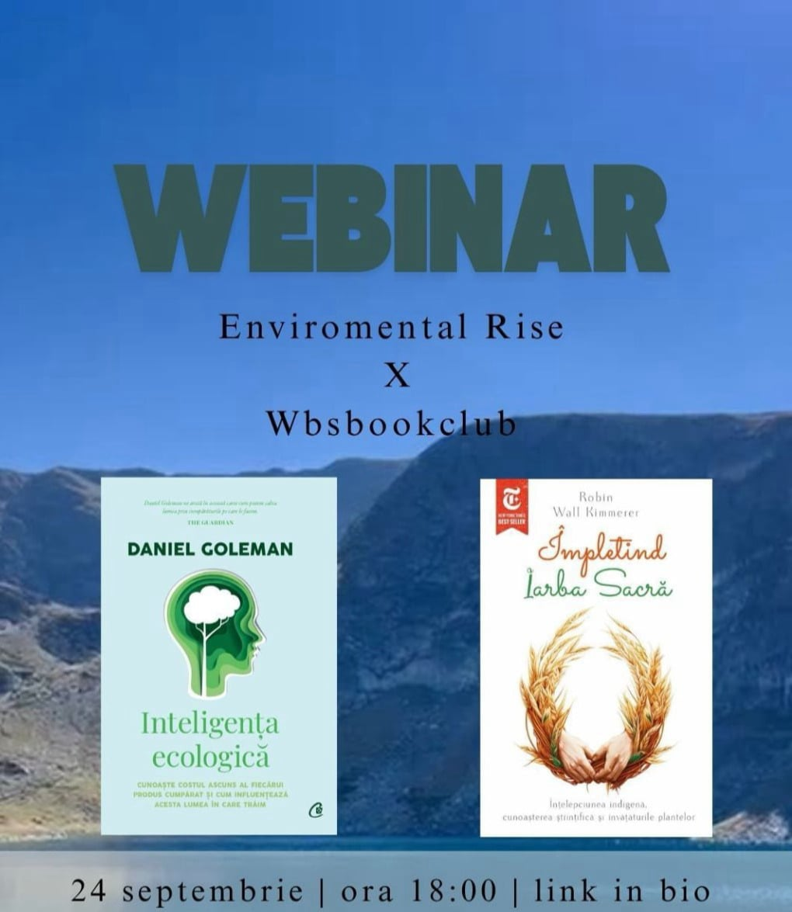

Ne implicăm pentru a face mediul care ne înconjoară un loc mai bun. Environmental Rise este instrumentul, dar tu faci diferența!
Alături de Uniunea Studenților din România am plantat 3000 de puieți de molid în zone afectate de dăunători.

Alături de Hike&Clean Cluj am reușit să aducem peste 25 de voluntari la acțiune și să adunăm 90 de saci de 120 de litri, rezultând în sute de kilograme de deșeuri scoase din natură. În urma acțiunii, am reușit să scădem din presiunea acestor deșeuri asupra ecosistemelor naturale.

În cadrul primei noaste acțiuni de igienizare am mers în pădurea Făget, unde știam că problema deșeurilor aruncate în natură persistă. Am colaborat cu Hike&Clean Cluj (un grup informal cu experiență în igienizări și drumeții) și am reușit să strângem 30 de saci de 120 de litri. Au participat 20 de voluntari la acțiune.

Documentarul abordează problema tăierilor ilegale de arbori din pădurile din România și arată cum mafia lemnului e înrădăcinată în instituțile statului. La finalul evenimentului, unul dintre regizori, Mihai Dragolea, a ținut o discuție despre realizarea documentarului și a răspuns la întrebările din public

„Blue Carbon” este un documentar de mediu care aduce împreună muzica și știința pentru a arăta cum ascultând natura, și unul pe altul, e cheia înspre combaterea unei catastrofe climatice. Evenimentul a fost în colaborare cu Organizația Internațională EarthEcho.

În cadrul webinarului am împărtășit cu participanții cărțile noastre preferate de mediu, cărți care ne-au marcat și ne-au schimbat percepția asupra naturii. Cărțile prezentate au fost „Împletind iarba sacră” de Robin Wall Kimmerer și „Inteligența ecologică” de Daniel Goleman.
